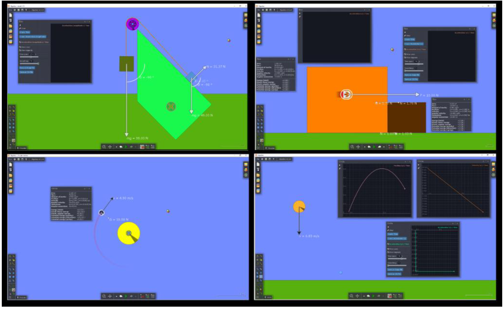

Simulation-Based Learning
My work
Built Algodoo activities that let learners predict outcomes and test them by changing variables.
Workplace use
Practise process decisions and explore equipment behaviour in a simulation.
Project image

Example and evaluation
Example scenario
A learner changes a load or friction setting in a model. They predict the effect, inspect the simulation and explain why the result changed. An industry version can use a relevant equipment or process example.
Potential KPIs
Decision accuracy · Explanation quality · Task completion time